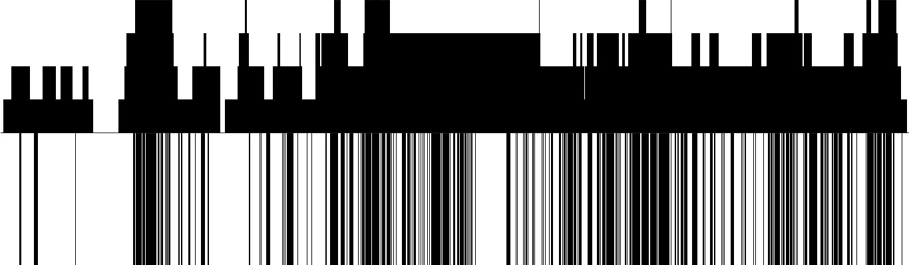
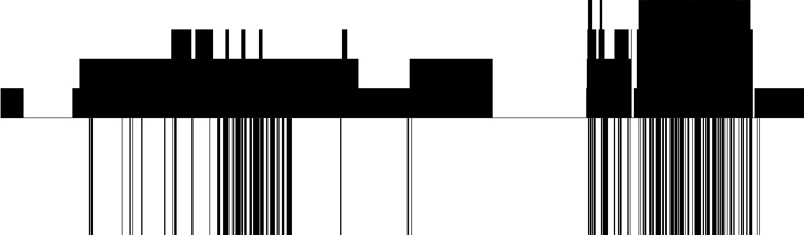
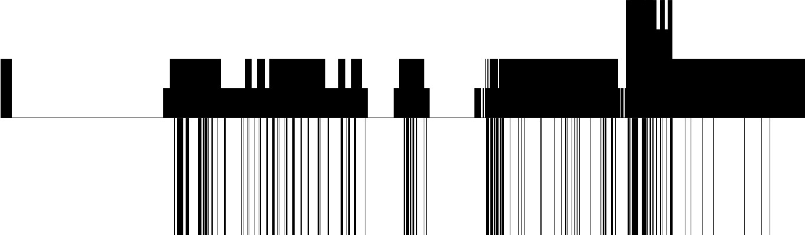
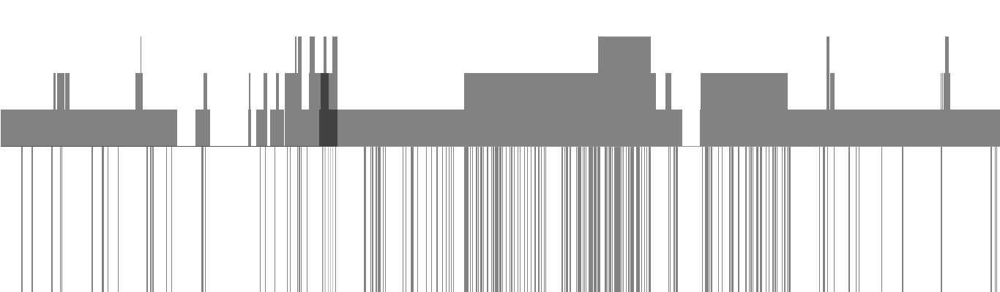
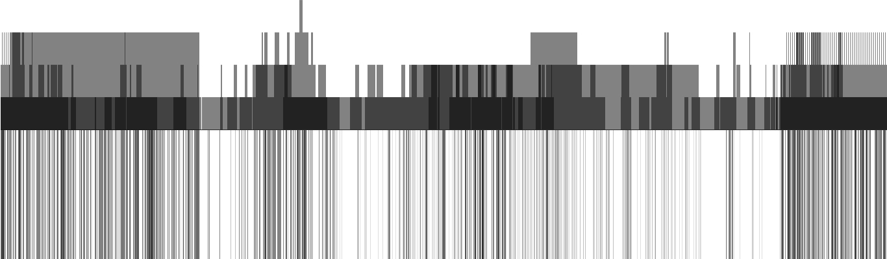

Presence Detector Visualisations 2015-16
Processing program, Microsoft Kinect
A selection of visualisations generated by the program which runs the Presence Detector installation. The upper half of the visualisations represents the number of people detected by the Kinect, whilst the lower half of the visualisations represents the detection of movement by the Kinect.